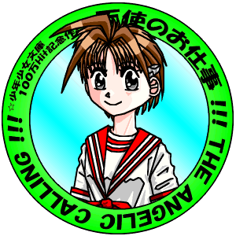
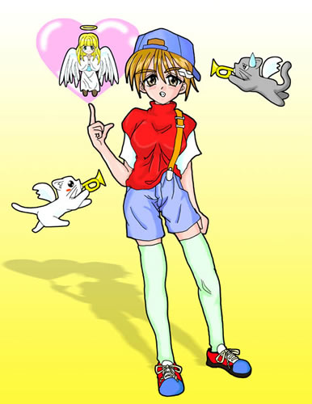

—— 少年少女文庫１００万Ｈｉｔ記念作品 ——
|
【最新情報】
全十四話、完結！ 第二話「イオちゃんの、恋のトキメキ？大作戦・前編」にイラスト（どら）を追加(11/24) 最終話 「史上最悪の作戦！」 （作 ゴールドアーム）を掲載(11/19) 『天使のギャラリー』 に、「真織・巫女姿」（はむに）を掲載(11/04) |

（Title-anime by Hikaru Kotobuki）
☆ 合作イラスト 『天使のお仕事 — The Angelic Calling —』 ☆
▽ 元画像（ＢＭＰファイル・ＬＺＨ圧縮）はここをクリック！！ ▽
★ リレー小説 『天使のお仕事 — The Angelic Calling —』 ★
（Illustration-Hamuni）

▼ 設定、キャラクター紹介 ▼第一話 「伊織くん、『伊織ちゃん』になる」（作 ＭＯＮＤＯ）
第二話 「イオちゃんの、恋のトキメキ？大作戦・前編」
第三話 「イオちゃんの、恋のトキメキ？大作戦・後編」（作 米津）
第四話 「伊織、鏡の世界へ行く…」
第五話 「プロジェクト・縁結び」（作 風祭玲）
第六話 「真織の かみかざり」（作 猫野丸太丸）
第七話 「閑話休題（いんたーみっしょん）」（作 Kardy）
第八話 「乙女のエナジー」（作 もと（MOTO））
第九話 「幸福は歩いてこない。だから無理矢理プレゼント」（作 夕暮稀人）
第十話 「間違いだらけの(？)選び」（作 会津里花）
第十二話 「瑞樹は瑞樹（前編）」
第十三話 「瑞樹は瑞樹（後編）」（作 ことぶきひかる）
最終話 「史上最悪の作戦！」（作 ゴールドアーム）
★ 『天使のお仕事 ・番外編』 ★
EX.1 「ミス・天ヶ丘コンテスト」（作 風祭玲）
EX.2 「いんまなあの子へHeavenly☆Present」（作 米津）
EX.3 「知らないって事は幸福だね♪」（作 夕暮稀人）
EX.4 「はじめての♪・・・」（作 kagerou6）
EX.5 「セパとヘアクリップ」（作 BAF、猫野丸太丸、よしおか）
☆ 連動企画『天使のギャラリー』 ☆
→ 少年少女文庫１００万Ｈｉｔ記念への感想、要望、小ネタ等はこちらに
←
|
作品大募集！！ あなたもこの合作イラストを元に、物語を作ってみませんか？
このほかの規定は少年少女文庫の投稿規定に準じます。楽しい作品をお待ちしております。 |
{kind=link}